Сундук
сокровищ
Сначала — простой куб, который ты уже знаешь. Потом научимся менять только его верх: появится место для сокровища!
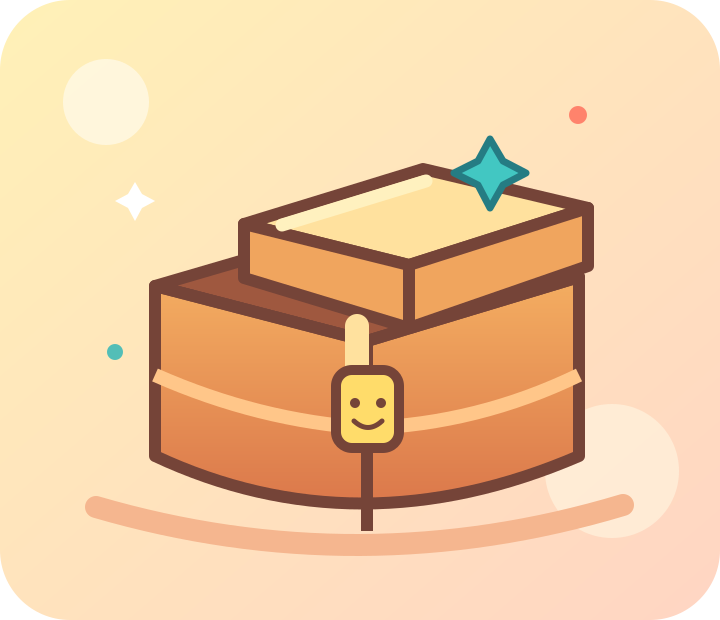
Что там спрятано?Меняем одну грань, а не весь куб
В Object Mode двигается весь предмет. В Edit Mode можно выбрать только верхнюю грань — плоскую сторону куба. Сделай внутри неё рамку клавишей I, а затем опусти середину клавишей E. Получится полость без вырезания и сложных инструментов.
Проверь глазами: снаружи куб почти тот же, но сверху теперь есть место для клада. Покажи, какая часть изменилась.
Знакомый куб становится коробкой
Это уже умеют твои руки после робота и домиков: меняем размер куба и ставим его на сетку.
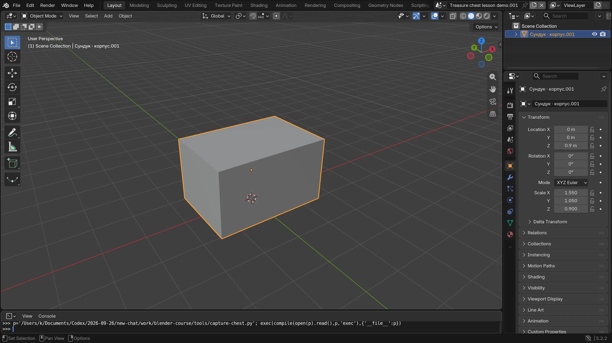
Пока это просто куб
Пустое место появится в следующей миссии. Начало нарочно знакомое.
Сделай широкую коробку
В новой сцене выбери куб. Нажми S, затем X и потяни мышь, чтобы он стал шире. Щёлкни для подтверждения. Если хочется, меняй глубину через S, Y, а высоту — через S, Z. Точные числа не нужны.
Покажи мне: широкая коробка
Настоящий Blender 5.2. Нажми на картинку, чтобы рассмотреть её крупнее. Твоя модель может выглядеть иначе.
Поставь на сетку
Если часть куба ушла под пол, нажми G, затем Z и чуть подними его. Посмотри сбоку: низ должен касаться сетки. Взрослый может помочь с высотой.
Покажи мне: где должен быть низ
Настоящий Blender 5.2. Нажми на картинку, чтобы рассмотреть её крупнее. Твоя модель может выглядеть иначе.

Что у меня получилось
Секрет внутри коробки
Здесь ступенька выше: впервые выберем одну грань. Двигайся медленно и открывай картинки по одной.
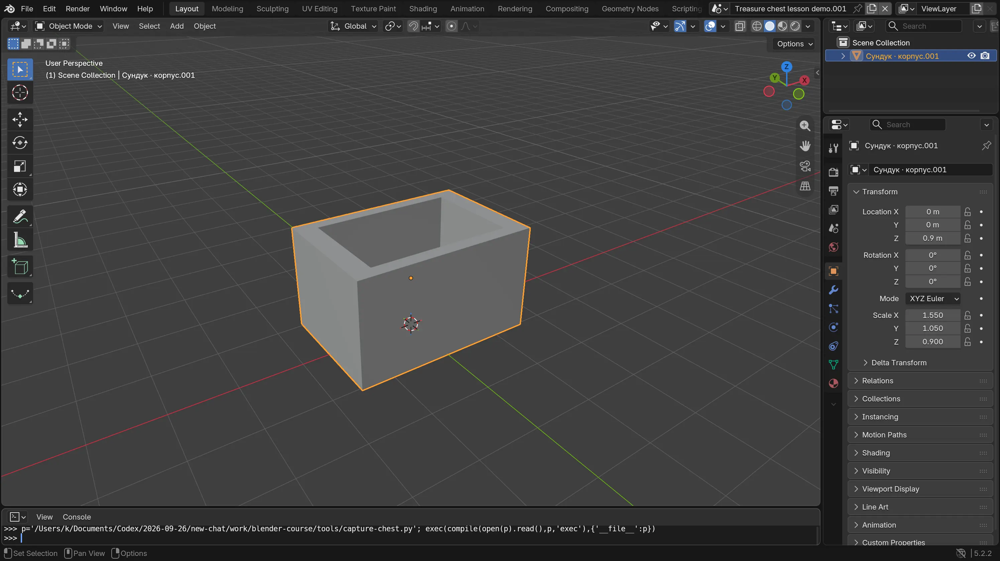
Сверху теперь есть место
Это тот же куб: мы изменили только его верхнюю грань.
Войди внутрь модели
Выбери корпус и наведи мышь на большое окно с моделью. Нажми Tab — сверху слева появится Edit Mode. Клавиша 3 в верхнем ряду клавиатуры включает выбор граней. Если куб оранжевый целиком, нажми Alt+A, чтобы снять выбор. Нажми на верхнюю плоскую сторону. Только она должна стать оранжевой.
Покажи мне: Edit Mode и верхняя грань
Настоящий Blender 5.2. Нажми на картинку, чтобы рассмотреть её крупнее. Твоя модель может выглядеть иначе.
Найди Edit Mode и выбор граней
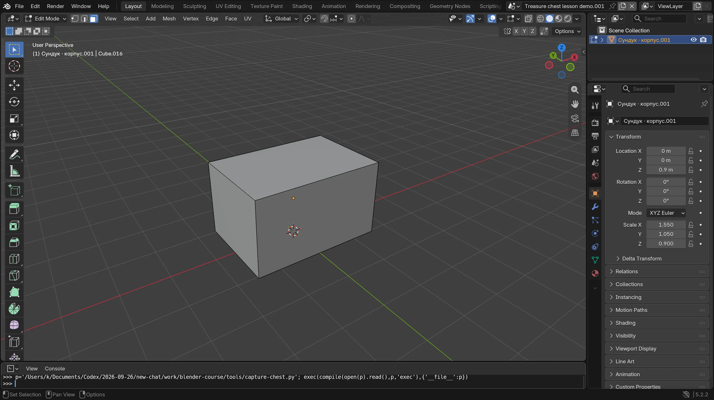
Наведи мышь на большое окно Blender и нажми Tab. Сверху слева появится Edit Mode. Нажми 3 в верхнем ряду клавиатуры: значок выбора плоских граней станет синим. Alt+A снимает выбор со всего куба.
Проверь: Сверху слева видно Edit Mode и синий значок грани. Теперь можно выбрать только одну сторону.
Оранжевая только верхняя грань
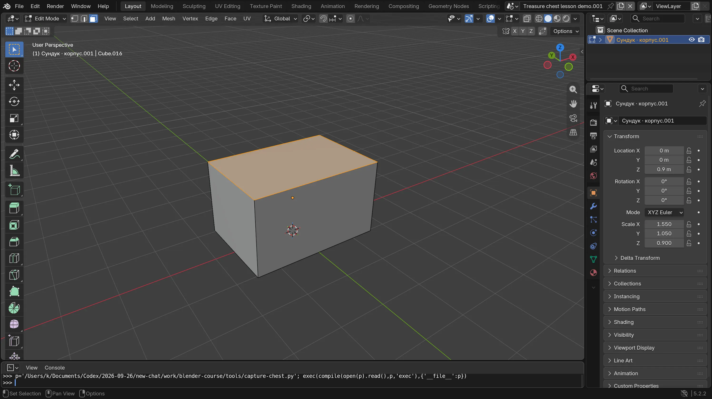
Щёлкни по верхней плоской стороне куба. Боковые стенки остаются серыми, а верх — оранжевым. Если выбрал не то, щёлкни по нужной стороне ещё раз.
Проверь: Выделен один верх. Это та часть, которую мы сейчас изменим.
Нарисуй рамку
Когда выбрана только верхняя грань, нажми I. Медленно подвинь мышь: внутри появится прямоугольник. Оставь вокруг него достаточно широкую рамку и щёлкни. Если рамка исчезла, попробуй ещё раз через Ctrl+Z.
Покажи мне: новая рамка
Настоящий Blender 5.2. Нажми на картинку, чтобы рассмотреть её крупнее. Твоя модель может выглядеть иначе.
Клавиша I сделала рамку
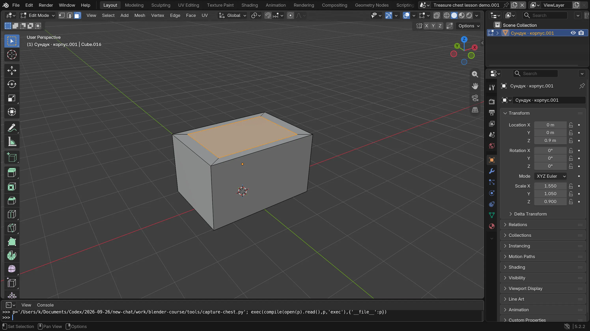
При выбранной верхней грани нажми I, немного подвинь мышь к середине и щёлкни. Появится внутренний прямоугольник с рамкой вокруг него.
Проверь: На верхней стороне виден второй прямоугольник. Он всё ещё выбран.
Опусти середину
Внутренний прямоугольник ещё выбран. Нажми E и медленно веди мышь так, чтобы середина опускалась внутрь. Остановись до дна коробки и щёлкни. Нажми Tab, чтобы снова увидеть Object Mode. Если ямка получилась неглубокой, это отлично.
Покажи мне: ямка внутри
Настоящий Blender 5.2. Нажми на картинку, чтобы рассмотреть её крупнее. Твоя модель может выглядеть иначе.
Клавиша E опустила середину
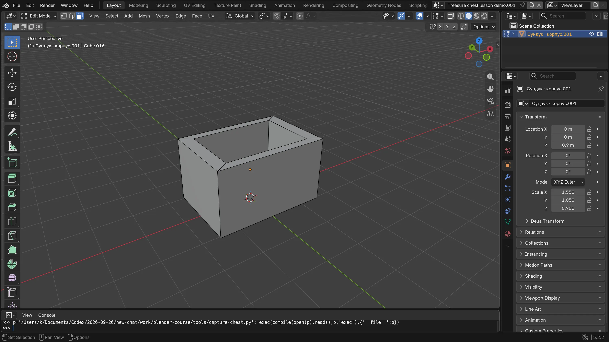
Нажми E, медленно веди мышь так, чтобы середина опускалась внутрь, и щёлкни до того, как дойдёшь до дна куба. Если мышь пошла вверх, нажми Esc и попробуй снова. На снимке видны стенки новой ямки.
Проверь: Середина оказалась ниже рамки. У сундука появилась глубина.
Посмотри на полый корпус
Нажми Tab, чтобы вернуться в Object Mode. Снаружи коробка знакомая, а сверху есть отверстие. Можно оставить любую неглубокую ямку.
Проверь: Видны края коробки и место для сокровища внутри.


Что изменилось? Покажи стенки, рамку и место для сокровища. Зачем мы выбирали только верхнюю грань?
Что у меня получилось
Крышка и смешной замок
Возвращаемся к Object Mode. Крышка — отдельный предмет: её можно передвигать, не меняя коробку.
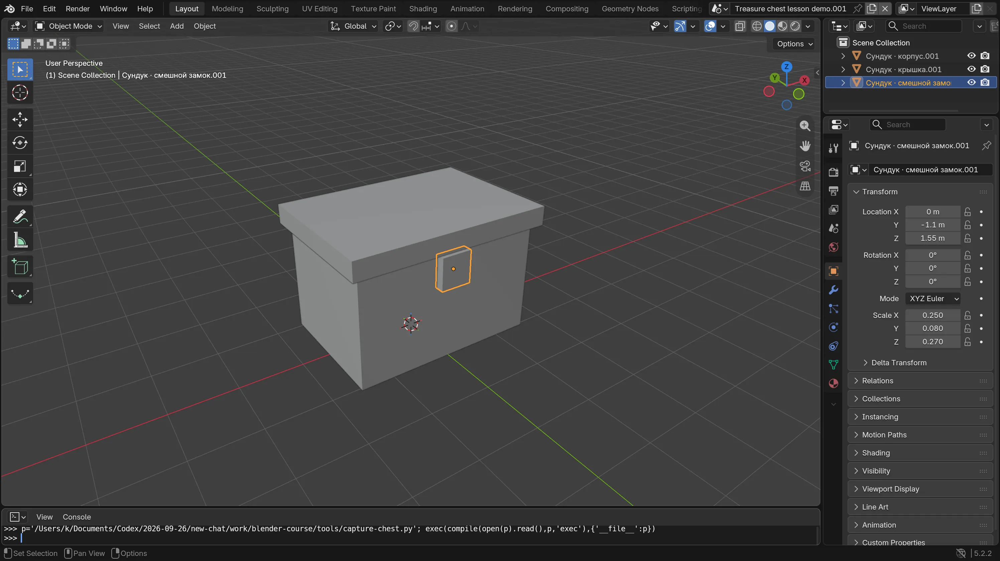
Сундук умеет закрываться
Замок здесь просто маленький куб. Можно придумать другую форму.
Положи крышку
Проверь, что сверху слева написано Object Mode. Открой Add → Mesh → Cube. Сделай новый куб плоским через S, Z, широким через S, X и подними через G, Z. Крышка должна лежать чуть выше краёв корпуса. Если не попал точно, попроси взрослого помочь.
Покажи мне: отдельная крышка
Настоящий Blender 5.2. Нажми на картинку, чтобы рассмотреть её крупнее. Твоя модель может выглядеть иначе.
Плоский куб стал крышкой
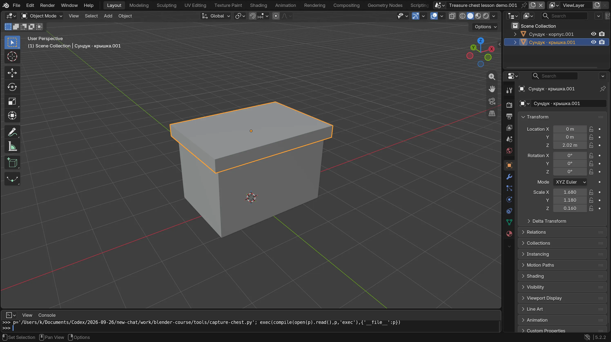
В Object Mode добавь новый куб через Add → Mesh → Cube. Сделай его плоским через S, Z, шире корпуса через S, X и подними через G, Z. На снимке крышка лежит сверху отдельно от корпуса.
Проверь: В списке справа теперь два предмета: корпус и крышка. Выбрав крышку, можно двигать её отдельно.
Придумай замок или знак
Ещё один маленький куб, шар или конус может стать замком на передней стенке. Добавь одну деталь и передвинь её к себе. Если деталь прячется внутри стенки, взрослый поможет подвинуть её вперёд через G, Y. Можно остановиться с одной крышкой.
Покажи мне: где замок
Настоящий Blender 5.2. Нажми на картинку, чтобы рассмотреть её крупнее. Твоя модель может выглядеть иначе.


Что у меня получилось
Открой и покажи сокровище
Теперь крышка докажет, что внутри действительно есть место. Покажи закрытый и открытый сундук.
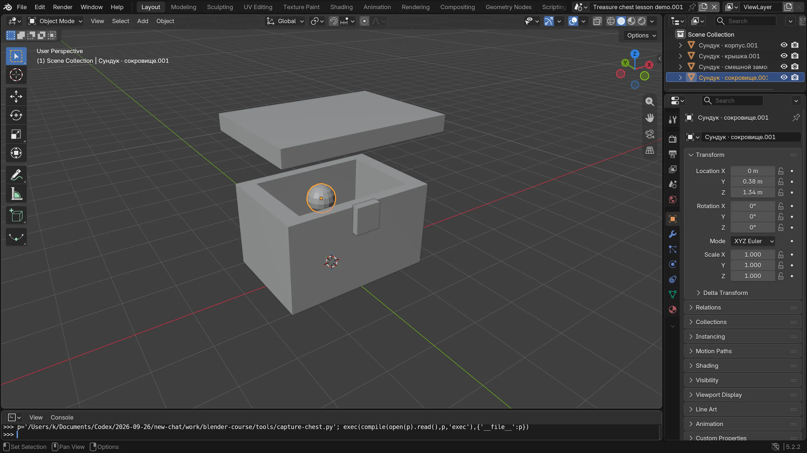
Тайник найден!
Шар на снимке необязателен: клад может жить только в твоей истории.
Подними только крышку
Выбери крышку — корпус не должен светиться оранжевым. Нажми G, затем Z и подними её над коробкой. Щёлкни. Посмотри внутрь. Если хочется, верни крышку обратно через Ctrl+Z и открой снова.
Покажи мне: открытый сундук
Настоящий Blender 5.2. Нажми на картинку, чтобы рассмотреть её крупнее. Твоя модель может выглядеть иначе.
Крышка поднялась, корпус остался
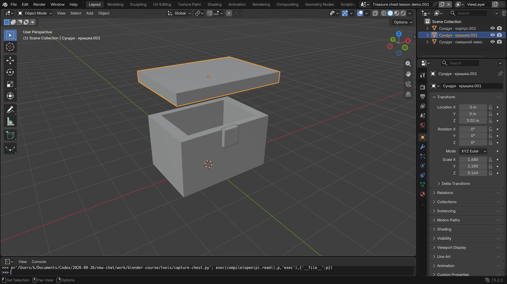
Выбери только крышку. Через G, Z подними её над сундуком и щёлкни. Теперь хорошо видно, что крышка и корпус — разные предметы.
Проверь: Крышка наверху, а внизу открытый тайник.
Положи клад — или придумай его
Можно добавить Add → Mesh → UV Sphere и уменьшить шар клавишей S. С помощью взрослого поставь его внутри. А можно не добавлять ничего: скажи, что за невидимый клад прячется в ямке. Как его зовут?
Покажи мне: пример сокровища
Настоящий Blender 5.2. Нажми на картинку, чтобы рассмотреть её крупнее. Твоя модель может выглядеть иначе.
Сохрани свою тайну
Вместе со взрослым открой File → Save As, выбери знакомую папку и сохрани chest.blend. Если файл уже сохранён, подойдёт File → Save. Покажи пальцем грань, которую ты изменил.
Покажи мне: как сохранить
Настоящий Blender 5.2. Нажми на картинку, чтобы рассмотреть её крупнее. Твоя модель может выглядеть иначе.
Выбери File → Save As
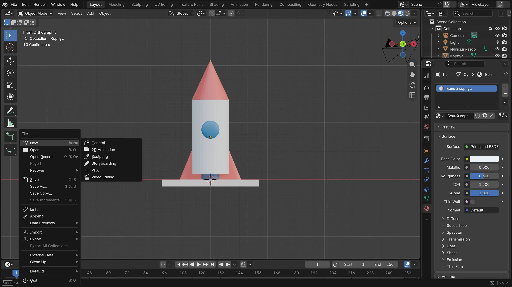
Открой File слева вверху и выбери Save As. На снимке знакомая сцена с ракетой: меню то же. Вместе со взрослым сохрани chest.blend в знакомой папке. Если файл уже сохранён, выбери File → Save.
Проверь: В выбранной папке появился файл chest.blend. Запомни эту папку.


Что у меня получилось
Ура, секрет раскрыт!
Ты изменил одну грань куба и создал место для истории. Какое сокровище нашёл бы твой друг?
Для взрослых: подготовка и помощь
Неделя 4 немного труднее третьей: первая встреча повторяет Object Mode и знакомые S/G, вторая вводит только одну новую идею — редактирование выбранной грани. Разделите её на два дня, если нужно. Для 6–7 лет ведите выбор грани и мышь вместе с ребёнком; в 8–10 лет дайте попробовать самостоятельно. Слово «грань» можно объяснить как плоскую сторону коробки.
Перед началом
- Откройте Blender 5.2 LTS в Layout и новую сцену. Скриншоты сделаны в отдельной учебной сцене Blender 5.2; размеры примерные. Для Inset и Extrude наведите указатель на 3D View, включите Face Select клавишей 3 в верхнем ряду, выделите только верхнюю грань.
- В примере корпус имеет увеличенный размер, поэтому физическая толщина рамки по двум осям немного разная. Это нормально. Не требуется Apply Scale, Boolean, точная толщина стенок или точные числа.
- Если ребёнок устал на Edit Mode, взрослый может выполнить I/E, а ребёнок выбирает глубину и рассказывает, какую часть куба поменял. Крышка и замок продолжают игру со знакомыми примитивами. Bevel для мягких краёв — только дополнительный показ взрослого.
- Файл сохраняйте вместе с ребёнком. Картинка меню Save As взята из знакомого урока с ракетой: меню Blender одинаковое, даже если сцена другая.
Что считать успехом
Ребёнок заметил разницу между движением всего предмета и изменением одной грани, увидел рамку и ямку, затем показал, что крышка — отдельный предмет. Даже если взрослый нажал часть клавиш, ребёнок может объяснить, что изменилось. Шар-сокровище и замок необязательны.